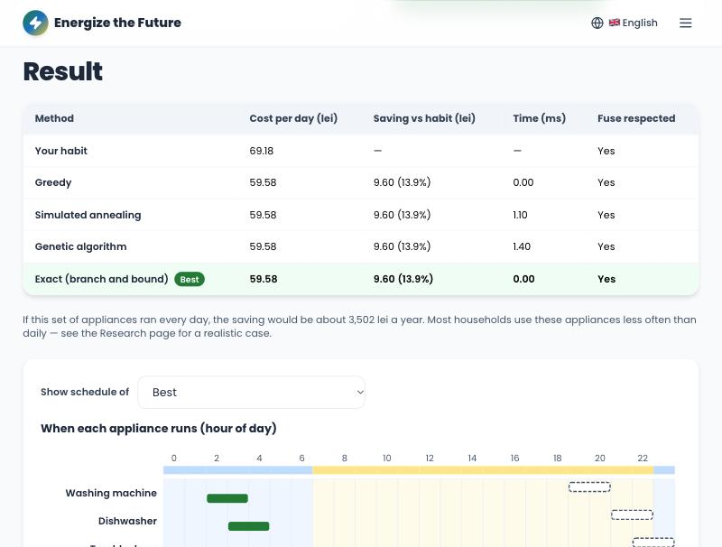
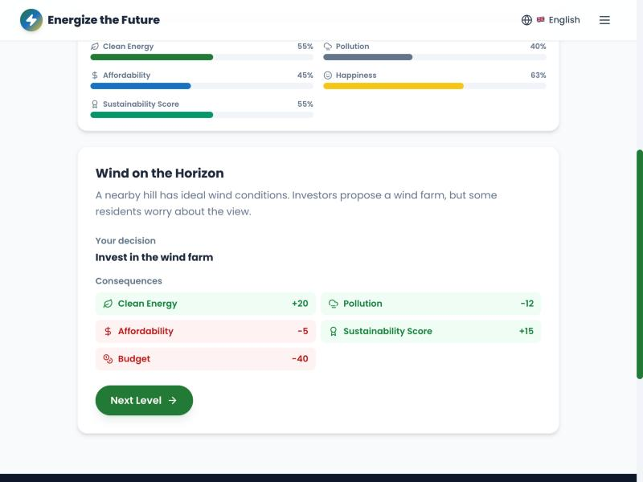

👆1You click "Fun Facts"
🛎️2The waiter takes the order to the kitchen
🛡️3The guards check it
🍳4The cook asks the pantry
📝5The cook writes the answer
🍽️6The page shows the fact
About 655 million people in the world still have no electricity. And the energy we do use — from coal, oil and gas — is warming the planet. The United Nations (a group of 193 countries) set a target called "Goal 7": clean and affordable energy for everyone by 2030. This website is a small, fun way to learn about that goal — and to try to save money with it.
It speaks three languages (English, Romanian, Russian), works on phones and computers, is free and needs no account. It has 12 pages.
stefaniat2 created it alone. The author wrote the plan and decided what it should do. An AI assistant called Claude Code wrote the computer code from the author's instructions. The author checked the results and put the site on the internet. (More on page 5.)
"This project, Energize the Future, was created by stefaniat2 as a solo project, using an AI assistant for the programming under their direction. I'm presenting it on their behalf."
You are presenting someone else's work. Never say "I programmed it" or "I made it." Before the event, ask the author (1) whether the competition rules allow this, and (2) whether they can be reached if the jury asks a very technical question.
Two buttons at the top right: 🌐 changes the language (everything changes instantly) and ☰ opens the list of all pages.
| Home · About SDG 7 | The idea, key numbers, and the UN goal explained simply |
| Renewable Energy · Tips · Fun Facts | 6 energy types to click open · 20 tips to tick off · 35 facts with ❤ and Share |
| Mini Game | Energy Hero: a strategy game with a leaderboard |
| Energy Calculator | Cost, CO₂ and trees for your appliances; compares old and efficient ones |
| Smart Scheduler | The cheapest hours to run your appliances, found by four methods in milliseconds |
| Research & Economics | The scientific test of the Scheduler: hypotheses, results, money saved |
| Community · Contact · AI & Credits | Two forms (private) · and an honest page about how AI was used |


Scores can't be deleted. Don't press "Submit to Leaderboard" while practising, and don't type silly names in front of the jury.
A computer cannot think or guess. It does exactly what it is told, step by step — like a cook following a recipe. The written instructions are called code. A website is made of three kinds of instructions:
HTML says what is on the page. (A button.)
CSS says how it looks. (Green, white writing.)
JavaScript says what happens. (Simplified.)
HTML is the skeleton, CSS is the clothes, JavaScript is the muscles. The whole project is written in these.
| In a restaurant | In a website | The real tool used here |
|---|---|---|
| 🍽️ Dining room | What you see | React (+ HTML, CSS, JavaScript) |
| 🍳 Kitchen | Does the work | Node.js and Express |
| 🛎️ Waiter | Carries requests | An API (a fixed menu of orders) |
| 🥫 Pantry | Stores information | A database (SQLite, kept at Turso) |
| 🏠 The building | Always-on computers | Vercel, Render, Turso (rented, free) |
| 📒 Notebook of changes | History of the project | Git and GitHub |
| ✅ Morning checklist | Checks it works | 50 automatic tests |
"Think of a restaurant. The dining room is what you see — built with React. The kitchen does the work — Node.js and Express. The pantry stores everything — a database. Each part lives on a free online service."
The Smart Scheduler needs no kitchen at all — it runs entirely inside your own browser, so nothing you type leaves your device. And the first visit can be slow only because the free kitchen naps after 15 minutes without visitors.
The idea. In Moldova, electricity at night (23:00–07:00) is cheaper — about 22% less (Premier Energy's official prices: 3.75 lei by day, 2.94 by night). So you save money by running the washing machine at night. But every home has a fuse: like a power strip that can only take so much at once. If everything starts together, the fuse trips.
Dashed box = when the family runs it out of habit (evening). Green = the cheaper hour found by the Scheduler (night).
The puzzle: choose a start hour for every appliance so the day costs the least and the fuse never trips. With six machines there are about 191 million combinations. A person can't check them all — so we use algorithms (step-by-step methods for solving a problem). The site compares four:
393 random families were simulated, with the same effort for each method. Results: the best plans save about 10% (comfortable fuse) or 6% (tight fuse) compared with the family's habit. With a tight fuse, annealing ends within 0.4% of the proven best plan; greedy within 1.1%. Exact search is perfect for one family, but with 40 appliances it can prove its answer only 8% of the time. Four predictions were written down before the test; the data supported all four. The numbers come from one script anyone can re-run.
For a typical family that is about 27 euros (≈ 540 lei) a year — real but modest, and free if you use the timer already in your washing machine. A 1,000-euro energy system would never pay for itself. No CO₂ saving is claimed (moving use to night changes the price, not the amount of energy). The families are simulated, and the tariff, though taken from the operator's official page, may change (and the page doesn't say if VAT is included), so the site lets you type your own prices.
"About 655 million people still have no electricity — and where night electricity is cheaper, most of us still run the washing machine at seven in the evening. The author asked: can a computer choose the start times of a family's appliances so the bill falls, without tripping the fuse — and which method does it best? Four predictions were written down before any test.
[Show the Smart Scheduler: press the button. Dashed = habit, green = cheaper plan, red line = the fuse.]
393 simulated families: the best plans save about 10% or 6%. Exact search is perfect for one home but can't cope with very large ones, where the smarter methods shine. For a typical family it is about 27 euros a year — free with the timer in the washer. An expensive system would never pay back, and no CO₂ saving is claimed. The AI assistant Claude Code wrote the code under the author's direction; its mistakes are in the public logbook. Scan the QR code and try it."
Demo (40 s): open Smart Scheduler → press the button → point at the table, timeline and red fuse line. Open the site once beforehand to wake the server.
| Who made it? | "stefaniat2, alone, with an AI assistant writing the code under their direction. I'm presenting for them." |
| What is new here? | "It solves a real puzzle — cheapest hours without tripping the fuse — with four methods, in your browser, and measures them honestly." |
| How do you know it isn't luck? | "393 simulated families, fixed seeds so anyone can repeat it, and statistical tests." |
| Is the comparison fair? | "Same effort for every method. One caveat: the smart methods start from the greedy plan, so part of their edge is built in. The fair test is against the proven best plan." |
| Are the tariffs right? | "Premier Energy's official page, in force since April 2026: 3.75 lei by day, 2.94 by night. VAT isn't stated, and the site lets you type your own prices." |
| What does it save? | "About 27 euros a year for a typical family — modest but free." |
| What did the AI do? | "Wrote code and drafts; the author set the questions, checked the results and decides what is claimed. It made mistakes — all in the logbook." |
| Is it safe? | "It checks everything sent to the server, limits spam, no accounts or tracking. The Scheduler runs in your browser." (Not "100% safe".) |
The Romanian pitch and 18 questions with English and Romanian answers are in docs/PRESENTATION.md.
| Word | One simple sentence | Like… |
|---|---|---|
| Code / JavaScript | Written instructions a computer follows exactly; JavaScript is the language used here | A recipe |
| Frontend · React | The part you see and click; React is a toolbox of reusable pieces | Dining room · Lego bricks |
| Backend · Node.js · Express | The always-on computer that does the work for everyone, and its tools | The kitchen |
| API | The fixed list of orders the website may send to the server | The menu and the waiter |
| Database (SQLite, Turso) | An organised spreadsheet that never forgets; Turso keeps it online | The pantry |
| Algorithm | A step-by-step method for solving a problem | A recipe for a puzzle |
| Simulated annealing · genetic · greedy · exact | Four ways to search for the cheapest plan (see page 6) | Shake the box · breeding · cheapest seat first · check everything |
| Hypothesis · benchmark | A prediction written before a test · a fair, repeatable test of many cases | A bet made in advance · a school exam for algorithms |
| Automatic tests · Lighthouse | 50 yes/no checks that run by themselves · Google's free report card for websites | Morning checklist · school report |
| AI assistant | A program you talk to that writes and tests code | A fast builder with the author as manager |
Simulated families, not real meter data · the tariff may change and its VAT basis isn't stated · the smart methods start from the greedy plan · the free server can be slow at first · translations were checked by AI, not yet by a person
Everything is public: github.com/stefaniat2/energize-the-future. For the curious: README.md, AI_USAGE.md, docs/research/ (abstract, annex, logbook, economics), docs/PRESENTATION.md.